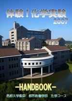

はじめに
体験！化学実験は首都大学東京の化学好きが中心となって運営するイベントで，今年で7年目を迎えます． 毎年テーマを変えて，いろいろと新しい試みをしています．
7年目の今年は好みの色付けができるチタン板アクセサリーや， 七色の構造色を見ることができる液晶アクセサリーなど作ったものを持ち帰る実験などがあります． きれいに光るルミノール反応，有機ELや化学繊維の合成，色ガラスの作成，そしておなじみのスライムなどさまざまなテーマをご用意しました．
テーマは子供から大人まで楽しめるようなものばかりです．是非いらしてください！
過去のハンドブック
|  | ||
| 2010年 ハンドブック | 2008年 ハンドブック | 2007年 ハンドブック |